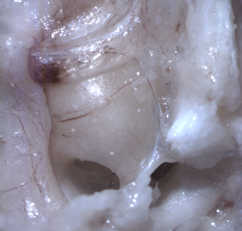
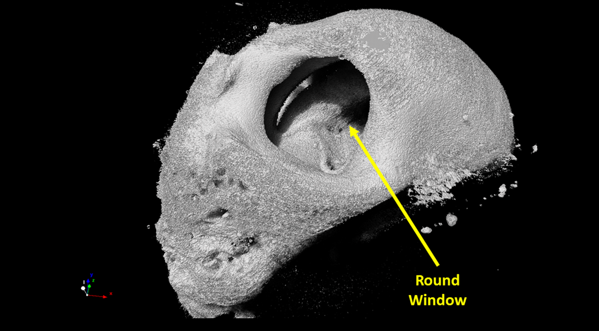
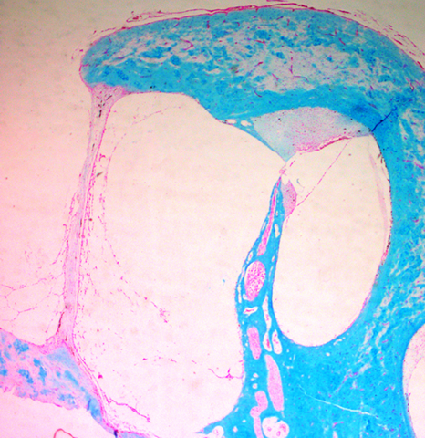

Round Window & Oval Window
Windows on the cochlea?
This is a dissection microscope image of the cochlea. The bony shell of the cochlea has two openings. One is called the round window, and the other called oval window. These structures are visible from the middle ear side and help us identify the cochlea.
Round Window: This is microCT image of the cochlea, showing the bony shell of the cochlea in grey color. Big hole in the middle of the bony shell is the round window.
Round Window: This is microscopy image of the cochlea, showing the round window. Blue colour is the bony shell of the cochlea. Round window is very circular opening 1-2mm in diameter on the bony shell surrounding the cochlea. It is covered by a soft-tissue membrane. Because this window is not covered by the bone, this round window may be a good place to target to access inside of the cochlea.
